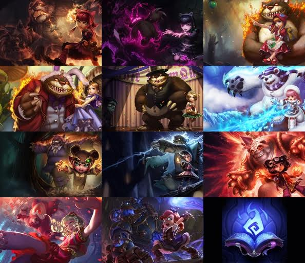

Sempre existiram aqueles em Noxus que não concordavam com as maldades perpretadas pelo Alto Comando noxiano. O Alto Comando havia acabado com uma tentativa de golpe feito pelo auto proclamado Príncipe da Coroa Raschallion, e uma repressão contra o novo governo estava prestes a acontecer. Estes excluídos social e politicamente, conhecidos como a Ordem Cinza, procuravam deixar todos em paz enquanto buscavam por mais conhecimento arcano sombrio.
Os líderes dessa sociedade de excluídos eram um casal: Gregori Hastur, o Feiticeiro Cinzento, e sua esposa Amoline, a Bruxa da Sombra. Juntos eles lideraram o êxodo de magos e outros seres sábios de Noxus, levando seus seguidores para viverem além da Grande Barreira no norte das terríveis Terras Vodu. Apesar da busca pela sobrevivência ser difícil, a colônia da Ordem Cinza conseguiu se assentar em uma terra onde muitos outros falharam.
Anos após o êxodo, Gregori e Amoline tiveram uma filha: Annie. Desde o princípio, eles souberam que havia algo de especial nela. om dois anos de idade, Annie enfeitiçou um urso das sombras - um feroz habitante das florestas petrificadas fora da colônia - transformando-o em seu mascote. Até hoje o urso ''Tibbers'' a acompanha, e ela o mantém sob um feitiço para que possa carregá-lo como um brinquedo. A combinação da linhagem de Annie com a magia negra do seu local de nascimento concederam a esta criança grande poder arcano.
Piromania: Após conjurar 4 habilidades, a próxima habilidade de ataque de Annie atordoará o alvo por um curto período de tempo.
Desintegrar - Annie arremessa uma bola de fogo infundida em Mana, causando dano e recuperando o custo de Mana caso o alvo seja destruído.
Incinerar - Annie conjura um ardente cone de fogo, causando dano em todos os inimigos na área.
Escudo Fundido - Concede a Annie e a Tibbers um percentual maior de resistência a dano, além de causar dano a inimigos que usarem ataques básicos.
Invocar: Tibbers - Annie dá vida ao urso Tibbers, causando dano a unidades na área. Tibbers pode atacar e também queimar inimigos que ficarem próximos a ele.
Skins
